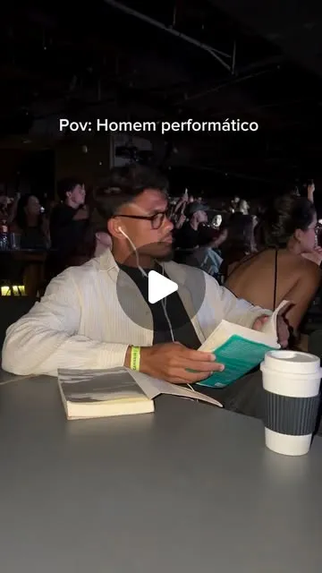
Achei conceito
O homem performático que o feed reconhece em dois segundos. Humor, lifestyle, wellness e moda.
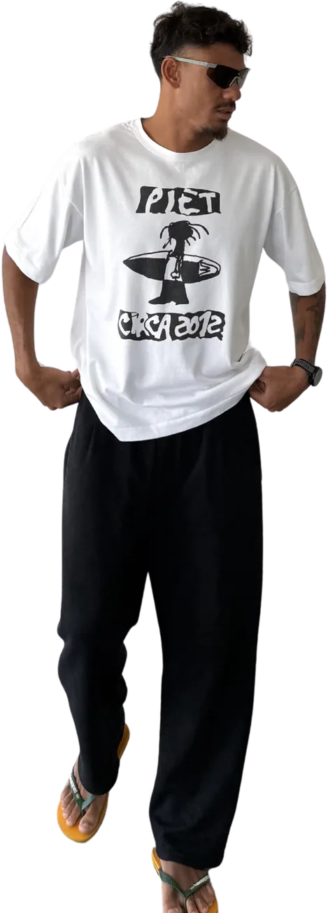
O personagem
“A verdade é que todo mundo é um pouco performático.”
É o personagem mais famoso do Gustavo e a porta de entrada de boa parte do público: o cara da ecobag, do livro na mão, do fone com fio e do brunch com referência Pinterest. Uma sátira que todo mundo reconhece e que já levou marcas como CeraVe, Reserva Go, QuintoAndar e Jappa da Quitanda para dentro da piada.

Achei conceito

Apenas um cara tranquilo
Ver no TikTok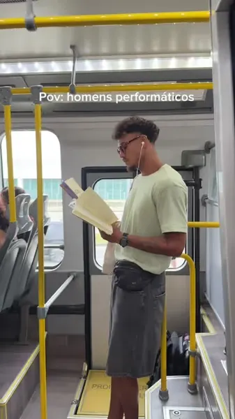
Performance
Ver no TikTok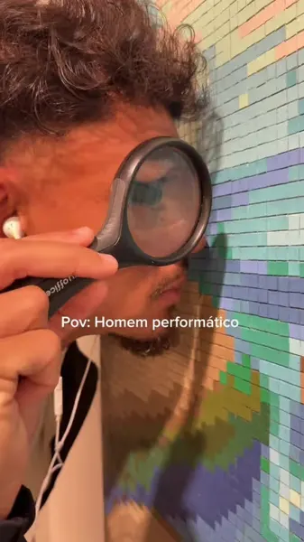
Contemplando a arte
Ver no TikTok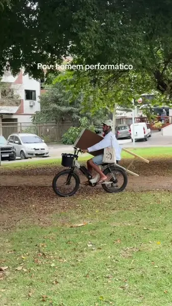
A arte respira
Ver no TikTokMétricas
Ao vivo
112.790
seguidores
159.059
seguidores
6 mil
inscritos
Seguidores somados · Instagram + TikTok + YouTube
277.859
Contagem ao vivo a partir dos contadores públicos Mixerno.Space (Instagram), Livecounts.io (TikTok) e SocialCounts (YouTube), atualizada a cada 15 segundos. O YouTube arredonda o número público de inscritos. *Dados de painel interno, do Media Kit 2026. Views somadas do TikTok: soma dos vídeos públicos do perfil.
Publicidade
Assista às campanhas aqui mesmo. Cada vídeo tem as views públicas e o link direto para a rede onde foi publicado.
Entretenimento · Copa do Mundo 2026 e Avenida Brasil
Seis reels em collab com a @tvglobo: a torcida performática na Copa do Mundo e as ruas do Rio comentando Avenida Brasil.
6 vídeos · mais de 61 mil curtidas no perfil da TV Globo
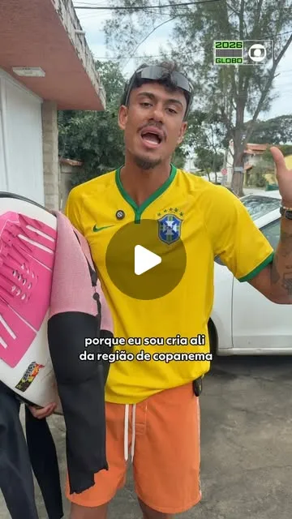
Quem é cria tá ligado: Escócia x Brasil

Brasil x Haiti no fuso gringo

Look apro ou repro pro jogo do Brasil?
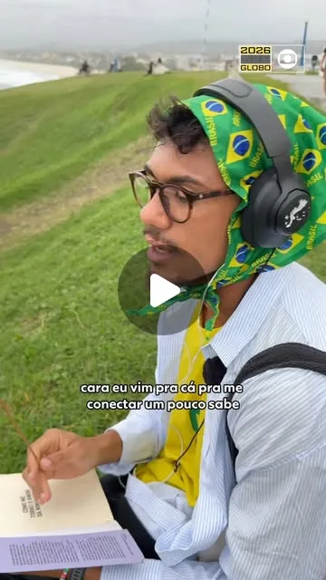
Atrás do hexa
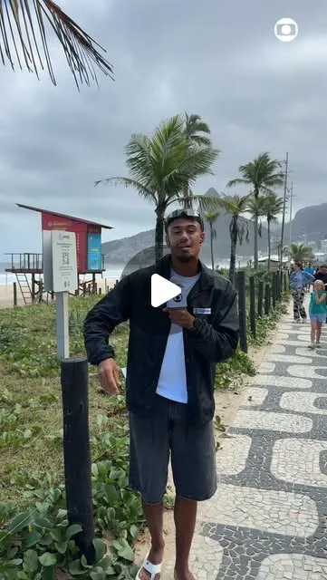
O momento mais marcante de Avenida Brasil

Avenida Brasil no Vale a Pena Ver de Novo

Skincare
Duas campanhas com o personagem performático, publicadas no TikTok e no YouTube Shorts.
2 vídeos · 4,7 mi views no TikTok

Look de frio no RJ #BarreiraSoComCeraVe

Performando com o Water Gel
Viagens
Parceria de viagens: o personagem no aeroporto e a Segunda Expedição para Caraíva, com vagas para a audiência.
2 publicações no Instagram
Segunda Expedição para Caraíva
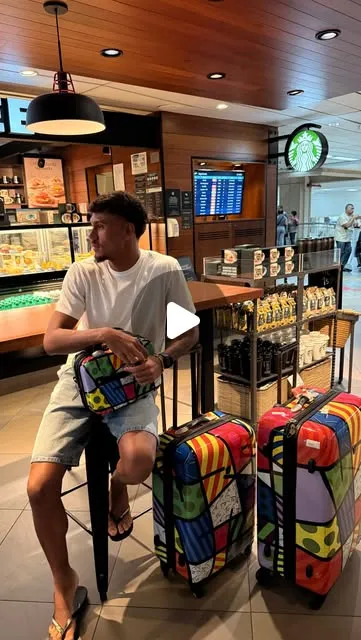
Eu até tento parar de voar, Gui
Moda · calçados · ArtRio 2026
O “artista plástico contemporâneo” na ArtRio com o conforto do tênis R-Oskaka.
Publicidade no TikTok e no Instagram

Dia de arte contemporânea na ArtRio

Bebidas · Rock in Rio 2026
Cobertura do último dia de Rock in Rio a convite da marca.
1 vídeo no TikTok
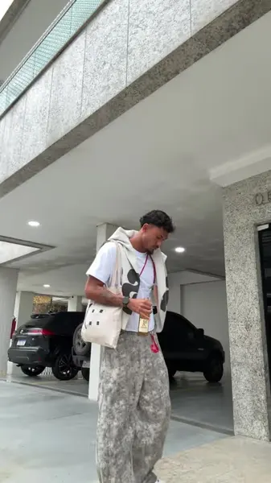
Último dia de RiR a convite da Coca-Cola
Imóveis
Bem-vindo à Astéric House: o cantinho vintage do personagem e o aluguel sem fiador e sem burocracia.
Publicidade no Instagram
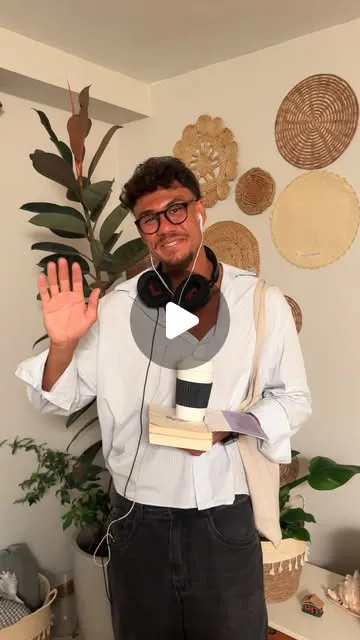
Seja bem-vindo à Astéric House

App de relacionamento
O app que conecta pessoas pelo mapa astral, antes da aparência.
Publicidade no Instagram
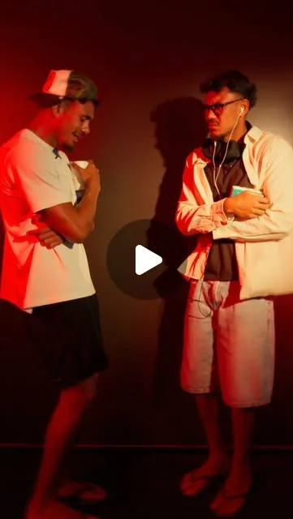
Conexão pelo mapa astral, sem foto

Mobilidade elétrica · cupom GVSTA
Duas parcerias com a bike elétrica, incluindo o “playboy metido a cria” do Media Kit.
2 vídeos · 431 mil views no TikTok

Maior sufoco em Buzin
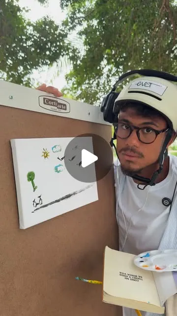
Eu sou movido a arte, Bru

Restaurante
O clima clean astéric do Jappa e os 7 Golden Tickets dos 7 anos da marca.
Publicidade no Instagram
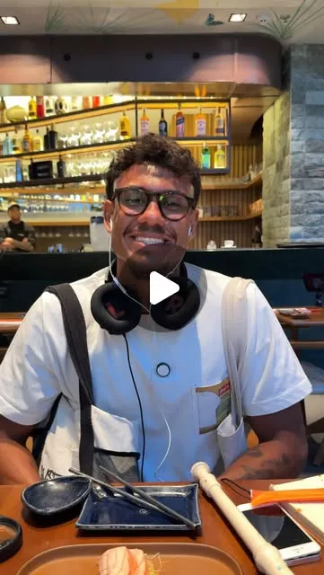
7 anos do Jappa com Golden Tickets
Malas e acessórios
Arrumação da mochila de viagem na rotina do Gustavo.
Reel do Media Kit
Arrumando a mochila
Óculos · cupom EZ-GVST
Visita à loja e escolha de armações.
Reel do Media Kit
Escolhendo armações na loja
Quem assiste

Sobre
Carioca de 26 anos, nascido e criado na Zona Oeste do Rio de Janeiro, Gustavo começou a criar conteúdo em 2024 com vídeos de lifestyle e uma boa dose de humor. No fim de 2025 passou a se dedicar de forma consistente, aumentou a frequência de publicações e consolidou o personagem performático.
Hoje são mais de 112 mil seguidores no Instagram e 159 mil no TikTok. Os vídeos curtos são o formato principal; no YouTube, os vlogs mostram a rotina e as viagens e aproximam a audiência do dia a dia dele.
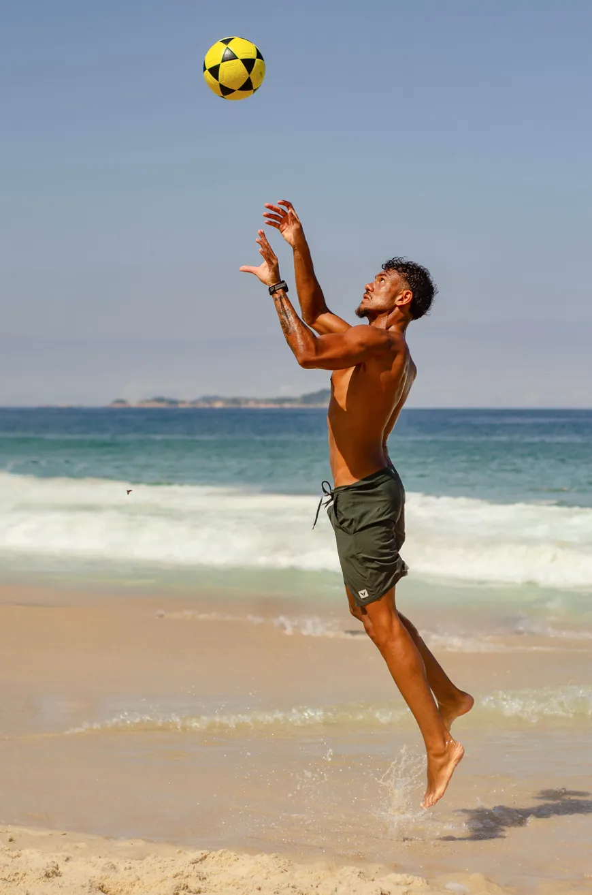

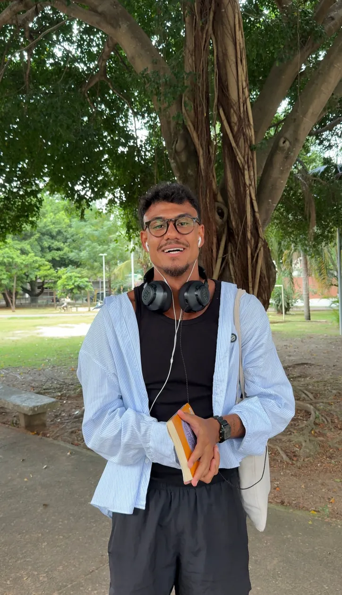
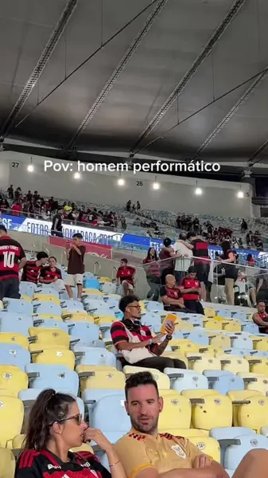
A melhor parte é sempre no intervalo
Ver no TikTok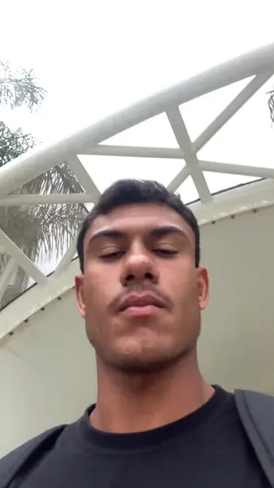
Obrigado, Zeca
Ver no TikTok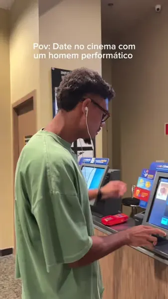
Não tem legendado, Fer?
Ver no TikTok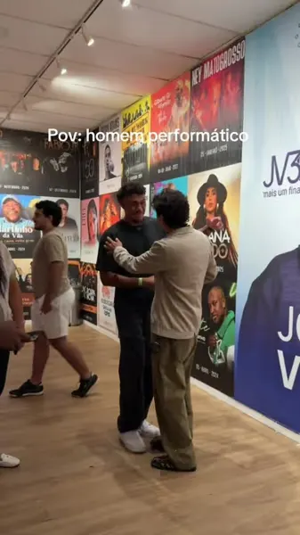
O tal encontro aconteceu
Ver no TikTokAgenciamento
A MUDAH é um hub de criatividade, comunicação e marketing de influência que conecta criadores e marcas. Propostas comerciais, campanhas e parcerias com o Gustavo são atendidas pela agência.